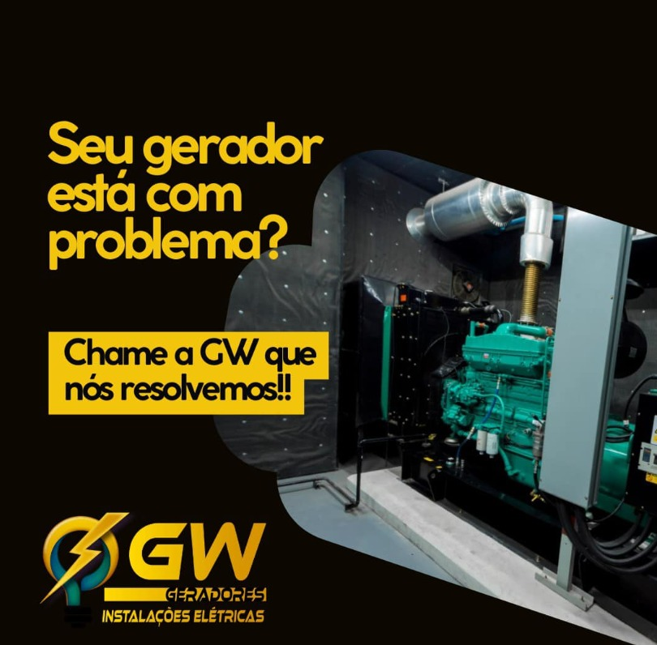

Geração de Energia
A GW Geradores atua em diversas fontes de geração de energia, assegurando eficiência contínua e confiabilidade.
Operamos em usinas hidráulicas, térmicas, biomassa, eólicas e solares, garantindo máxima performance em cada tecnologia.
Nosso compromisso é oferecer soluções sustentáveis e seguras para diferentes setores, desde indústrias até grandes empreendimentos.
💬 Precisa de suporte em geração de energia? Fale com a GW Geradores!
Nossas Soluções em Geração
Usinas Hidráulicas
Manutenção de turbinas, geradores e barragens para otimizar a produção hídrica.
Usinas Solares
Limpeza e inspeção de painéis, manutenção de inversores e sistemas de rastreamento.
Biomassa e Térmicas
Manutenção preventiva em sistemas de combustão e caldeiras.
Usinas Eólicas
Inspeção de pás, naceles e torres, garantindo eficiência dos aerogeradores.
Como Atuamos
- Inspeções periódicas e substituição de componentes
- Respostas emergenciais 24/7 com diagnóstico ágil
- Manutenção preventiva, preditiva e corretiva
- Gestão de equipes multidisciplinares altamente qualificadas
- Compromisso com eficiência e sustentabilidade